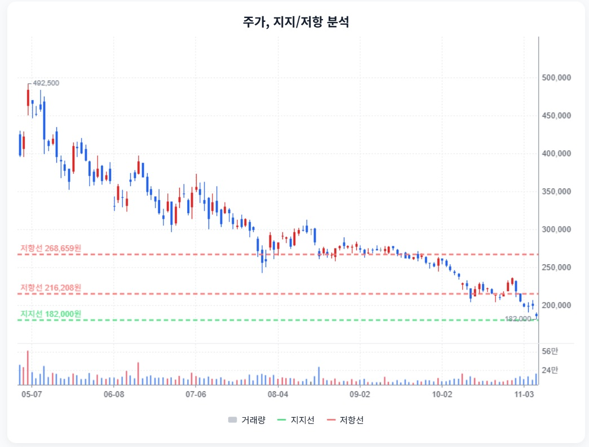

키움증권 · StockEasy 읽기용 정리
첨부 확인 2026-11-08 · 핵심 내용을 문단별로 재구성했습니다. 원문 전체 전사가 아니며, 차트는 첨부 화면에서 발췌했습니다. 원문의 매수·매도 표현과 가격 구간은 자동 매매 신호로 채택하지 않았습니다.
1. 거래대금 호황기의 이익을 그대로 연장하지 않기
StockEasy 원문 요약 · 주장과 가정 포함
원문은 3분기 지배순이익 2,386억원과 거래대금·수수료 감소를 설명합니다. 정상 ROE 11~13%·EPS 3.8만~4.5만원, 침체 시 ROE 10.7~12%·EPS 3.6만~3.8만원을 가정합니다.
2. 평가손실을 제외하기 전에 잔존 위험 확인
StockEasy 원문 요약 · 주장과 가정 포함
원문은 약 729억원의 펀드·조합 평가손실, 본사 PF 등 우발채무 약 4.57조원과 자회사 PF 5,412억원을 설명합니다. 고객예탁금은 자유로운 회사 현금이 아니라고 구분합니다.
3. 자본비율과 배당: 전망을 확정치와 구분
StockEasy 원문 요약 · 주장과 가정 포함
원문은 신NCR 1,825~2,207%, 자산/순자산 12.7배 등을 제시하고 2026 DPS 18,500원·2027 DPS 12,000원을 전망으로 구분합니다.
4. 17만원대 계산값은 보장 하단이 아닙니다
StockEasy 원문 요약 · 주장과 가정 포함
원문은 ROE·자본비용·성장률을 사용해 정상 가치 294,000~310,000원과 침체 시나리오 176,100원을 제시합니다. 거래대금 침체·시장 점유율 훼손·평가손실 반복·배당 축소를 재검토 조건으로 꼽습니다.
5. 가격 지지와 사업 방어력은 별개
StockEasy 원문 요약 · 주장과 가정 포함
원문은 182,000원 지지와 216,208원·268,659원 저항, 단기 과매도와 약한 추세를 함께 설명합니다.

StockEasy 원문 발췌 · 첨부 당시 가격·지지/저항. 현재 시세가 아닙니다.